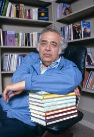
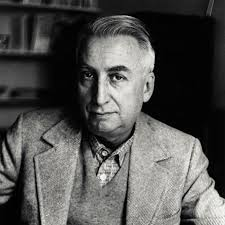
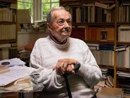
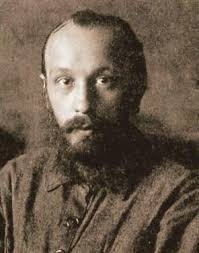
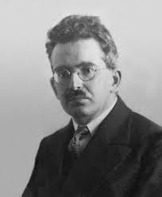
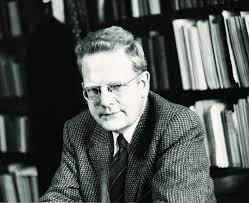

Harold Bloom
Teoría Literaria
📖 Obra Recomendada:
"El Canon Occidental"
"Los grandes libros nos enseñan a dialogar con nosotros mismos. Shakespeare es el centro del canon porque nos muestra quiénes somos."

Teoría Literaria
"El Canon Occidental"
"Los grandes libros nos enseñan a dialogar con nosotros mismos. Shakespeare es el centro del canon porque nos muestra quiénes somos."

Semiótica / Estructuralismo
"El placer del texto"
"El texto es un espacio de felicidad donde el lenguaje circula. La muerte del autor da nacimiento al lector."

Literatura Comparada
"Lenguaje y silencio"
"La literatura es un acto de confianza en el significado. Leer es un acto de hospitalidad hacia el otro."

Teoría del Discurso / Polifonía
"Problemas de la poética de Dostoievski"
"La novela es polifónica: múltiples voces independientes dialogan. Dostoievski crea una revolución en la forma novelística."

Filosofía del Arte / Cultura
"El narrador"
"El narrador toma de la experiencia lo que él mismo ha vivido o lo que otros le contaron. La novela nace de la soledad."

Crítica Arquetípica
"Anatomía de la crítica"
"La literatura es un universo verbal autosuficiente. Los arquetipos son patrones recurrentes que conectan toda obra."

Crítica Modernista
"Tradición y talento individual"
"Ningún poeta, ningún artista tiene su significado completo por separado. La tradición es un sentido histórico que obliga a escribir con el pasado presente."
Semiología / Teoría Feminista
"Revolución del lenguaje poético"
"El texto es productividad. La significación es un proceso, no un producto. Lo semiótico irrumpe en lo simbólico."